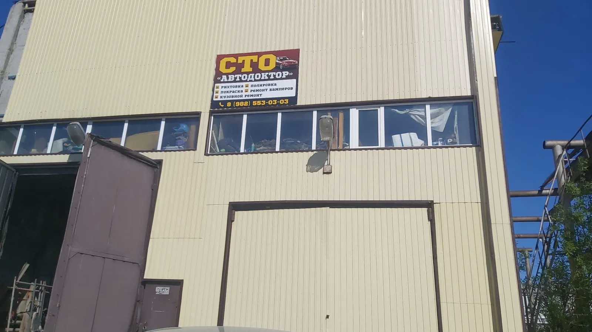
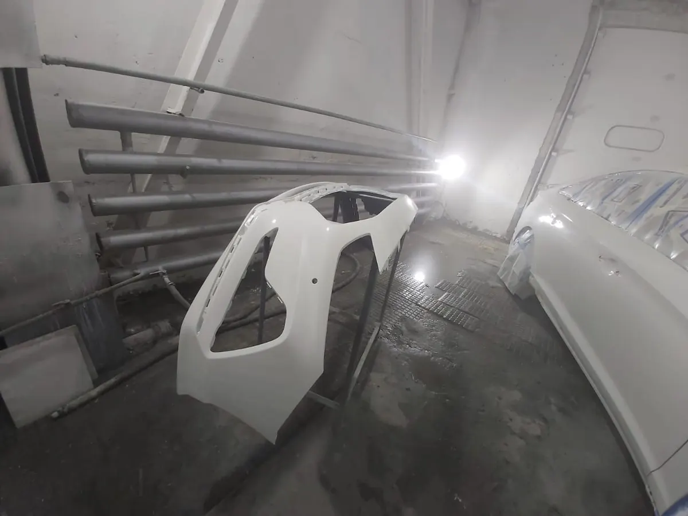
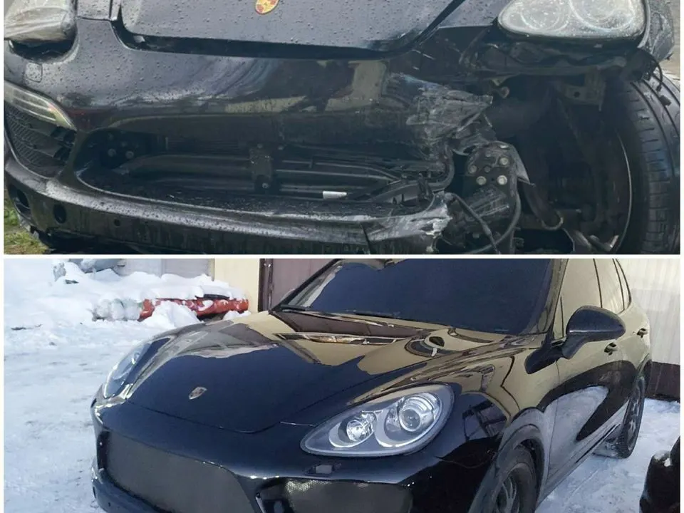
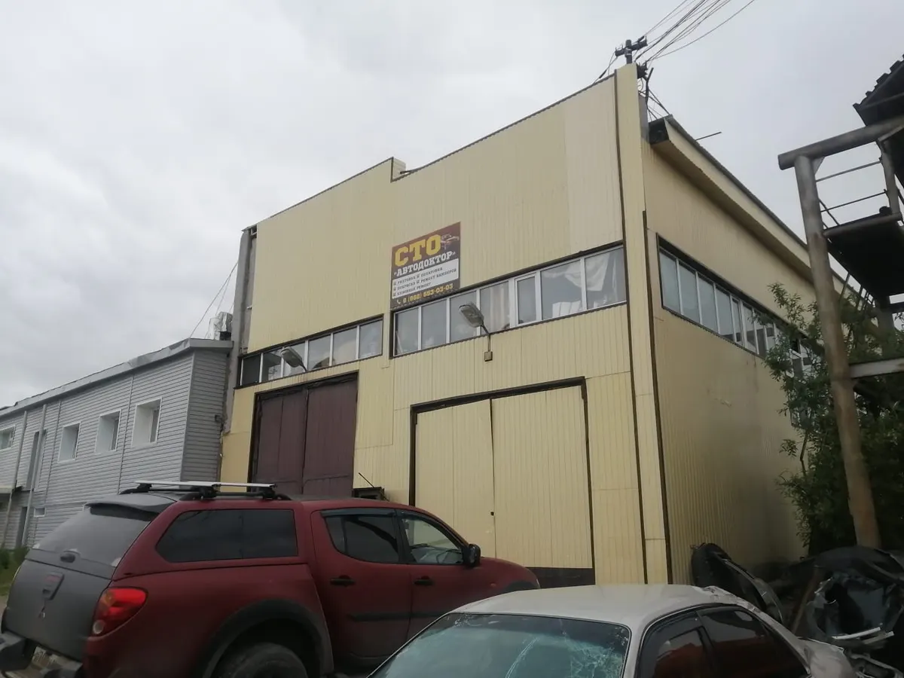

Покраска и кузовной ремонт · Нижневартовск
Покраска и кузовной ремонт в Нижневартовске: цвет в цвет, в срок
Выберите услугу, день и время - чат откроется с готовым текстом. Работаем с отечественными, японскими, корейскими, китайскими и европейскими авто.
- Пн-пт 9:00-20:00, сб-вс 10:00-18:00
- Рейтинг 4,6, 19 оценок
- Оплата картой, наличными и безналом

Что ещё есть
Входит
- Предварительная запись
- Скидки и акции
- Работа с разными марками авто
Отдельно, если нужно
- Оплата картой
- Наличные и безналичный расчёт
- Банковский перевод
Услуги
На карточке на Яндекс.Картах прайса нет, поэтому на демо цены стоят «уточнить». Здесь удобно показать их до звонка.
Покраска
- Покраска автомобилейКлиенты пишут про подбор краски в цвет и срок.уточнить
- Покраска рапторомУслуга указана на карточке.уточнить
Кузовной ремонт
- Рихтовка и кузовной ремонтКлиент пишет про ремонт помятого капота.уточнить
- Ремонт бамперовУслуга указана на карточке.уточнить
- Ремонт порогов и арокКлиент пишет про ремонт порогов и арок.уточнить
Сварка и защита
- Сварочные работыРубрика карточки.уточнить
- АнтикорУслуга указана на карточке.уточнить
Перечень услуг составлен по карточке и отзывам клиентов, прайса на карточке нет. Актуальные цены уточняйте при записи.
Как записаться
- 01
Выберите услугу, день и время
В блоке записи вверху страницы.
- 02
Нажмите «Записаться»
Откроется чат с готовым сообщением - останется его отправить.
- 03
Дождитесь подтверждения
Мастер уточнит марку автомобиля и объём работ.



Что говорят клиенты
Цвет в цвет
Клиенты пишут, что краску подобрали без отличий от заводской.
В срок
Клиент пишет, что покрасили в обговорённый срок.
Адекватные цены
Клиенты называют цену разумной.
Быстро и качественно
Повторно приезжают и рекомендуют знакомым.
Отзывы с Яндекс.Карт
«Красил камри, покрасили в обговоренный срок, краску подобрали в цвет не отличается, цена адекватная не космос, понравилось, рекомендую»
Юрий Жданов · 21 апреля 2026
«Ребятам спасибо большое) Сделали все очень хорошо и качественно. Максимально приближённо к заводской. Всем рекомендую это сто.»
Дарья И. · 24 января 2026
«Обращаемся уже второй раз, очень довольны работой мастера. Все быстро и качественно. Будем рекомендовать всем знакомым.»
Софья Яшина · 25 мая 2026
Отзывы с карточки на Яндекс.Картах, без правок.
Частые вопросы
Где находится мастерская?
Нижневартовск, Индустриальная улица, 16, строение 7.
Как записаться?
Выберите услугу, день и время в блоке записи вверху страницы - откроется чат с готовым сообщением. Можно позвонить: +7 (982) 571-04-24.
Подбираете ли вы краску в цвет автомобиля?
Да. Клиент пишет, что краску подобрали в цвет, отличий не видно.
Делаете ли вы кузовной ремонт и ремонт бамперов?
Да, кузовной ремонт, ремонт бамперов, порогов и арок.
Есть ли у вас сварочные работы и антикор?
Да, обе услуги указаны на карточке.
С какими автомобилями вы работаете?
С отечественными, японскими, корейскими, китайскими, европейскими, а также гибридными - по данным карточки.
Как можно оплатить?
Картой, наличными, безналично или банковским переводом.
В какие часы вы работаете?
С понедельника по пятницу с 9:00 до 20:00, в субботу и воскресенье с 10:00 до 18:00.
Записаться в AutoDoctor
- Адрес
- Индустриальная улица, 16, строение 7, Нижневартовск
- Часы
- Пн-пт 09:00-20:00, сб-вс 10:00-18:00
- Телефон
- +7 (982) 571-04-24